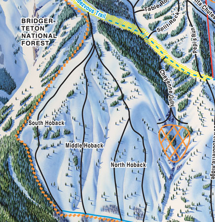

the hobacks are a large portion of the Jackson hole resort off to the side of the sublette chair. The hobacks are for experts who are in for an adventure.
personally,the hobacks is my favorite run of the mountain. It is very long and spread out along the west side of the mountian. The hobacks always seem to get the most snow after a stormy night, so get ready to feel like you are in heaven.The hobacks allow you to traverse and experiment with what part of it you like most. I love going in and out of the trees especially on these runs because lots of powder in the trees is always fun. But you must go with a buddy when going down the hobacks, it is easy to get lost, and get stuck in treewells. have fun and be safe!
 powder days